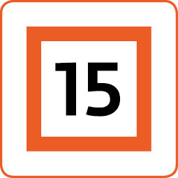

Lillestrøm Filmklubb har filmvisning mandager på ODEON Lillestrøm.
Mandag 2. november kl. 18:00 : Årets kortfilmpakke fra Grimstad
Norsk Filmklubbforbunds favoritter fra årets kortilmfestival i Grimstad
Årets pakke med kortfilmer inneholder 6 filmer innen ulike sjangere. Blant annet vises filmen som vant Gullstolen for beste kortdokumentar (Time of Plenty), animasjonsfilmen IVAR og musikkvideoen Kaundamani.
Jeg kverka en kid. Arjan Aziz Vinje, 10 min. Spillefilm
Jakob forteller historien om da han kjørte over et barn.
Sand i tissen. Ingrid Runde Saxegaard, 15 min. Spillefilm
16 år gamle Aurora tilbringer en naken dag med sin mor på en avsidesliggende strand.
Alenetiden deres fører til intime samtaler om sex og kjærlighet, som tester grensen
mellom å være mor og datter og å være venninner.
IVAR. Markus Tangre, 4 min. Animasjon
Anne legger merke til ektemannen Ivars nye lukt og ligger våken om natten med et
gnagende spørsmål: Skal hun forlate ham?
Mancave. Fredrik Hana, 23 min. Spillefilm
Charlotte Husebø blir dratt inn i en labyrint av undertrykte fantasier og mørke
hemmeligheter når hun oppdager at mannen hennes, Didrik Husebø, har et skjult rom i
familiens garasje.
Kaundamani. Mari Ørstavik, 5 min. Musikkvideo
“Kaundamani” er et tamilsk ordspill, som betyr at noen som heter Mani har
blitt lurt. Sangen tar ordspillet et skritt videre, og blander “Kaundamani”
med “tell pengene (count the money)”. Musikkvideoen bringer den morsomme
sangen til live ved å blande kulturer og stiler fra Sri Lanka og Norge.
Time of Plenty. Robin Jensen, 19 min. Kortdokumentar (vant gullstolen for beste kortdokumentar)
For tusen år siden slo polynesierne seg ned på verdens fjerneste øy i Stillehavet,
Rapa Nui (Påskeøya). Der utryddet de skogen og ødela dermed sitt eget levebrød. De
sultne øyboerne vendte seg mot den mest tilgjengelige proteinkilden: mennesker. Men
var det virkelig sånn det skjedde?

Tidligere programmer for filmklubben er tilgjengelige her:
Medlemskap for høsten 2026 koster kr. 100,- for nye medlemmer.
Billetter koster kr. 80,- og kjøpes i kassen som for vanlige
kinobilletter. Filmklubbvisningene er basert på medlemskap.
Det er innført digitalt medlemsregister, innmelding i filmklubben
kan gjøres ved å følge registreringssiden. Betaling av medlemskapet
kan så gjøres til vår konto 1286.44.44987, eller på Vipps (526594).
Send oss også en e-post når du har meldt deg inn.
Vil du bli medlem eller har andre spørsmål om oss? -Ta kontakt på post@lillestrom-filmklubb.net .
Filmhilsen fra Margaret, Øivind, Sigmund og Morten.
(Styret i Lillestrøm Filmklubb).
Etter filmen går vi ut tur f.eks. på Egon, og alle som har lyst er velkommen til å bli med.